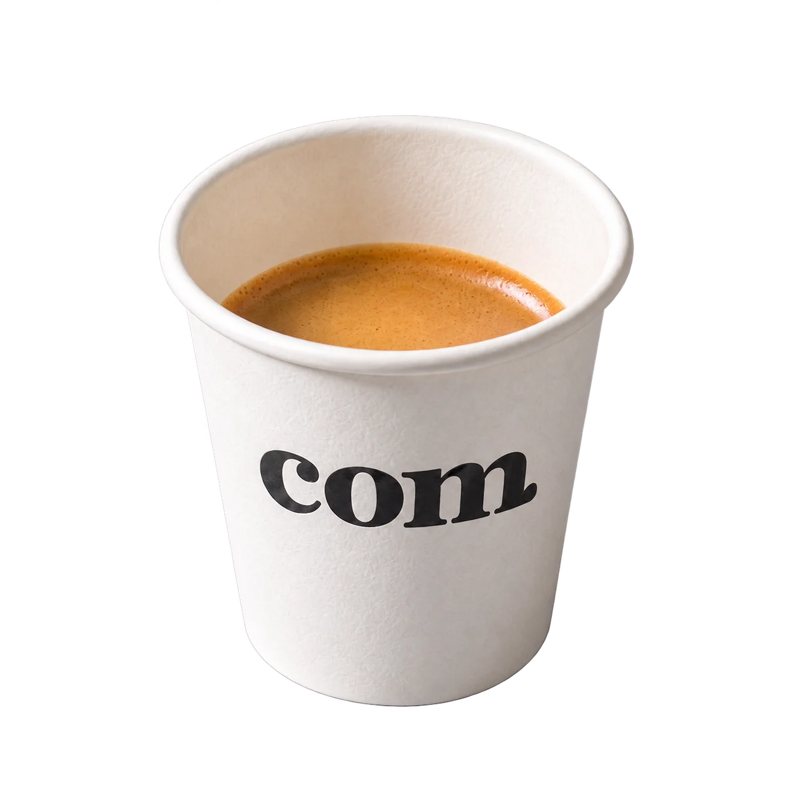

Meniul nostru.
Meniu clasic
Espresso
Scurt. Intens. Fără ocolișuri.
Espresso concentrat, cu aromă intensă și corp plin. Pentru cei care preferă cafeaua simplă.

- Porție
- 60 ml
- Espresso
- 60 ml
- În pahar
- Cafea
- Servire
- Cald
Boabele reprezintă shoturi de espresso. Cold brew conține cafea, chiar dacă nu are simbol de shot. Cantitățile sunt orientative.
Alege direct o băutură +
Ce găsești la com.
Hai să vorbim ↗Meniu clasic
- Espresso
- Cortado
- Macchiato
- Flat White
- Cappuccino
- Long Black
- Latte
Selecția Signature
- Iced Latte
- Espresso Tonic
- Cold Brew
- Cold Brew Tonic
- Babyccino